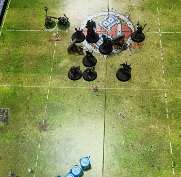
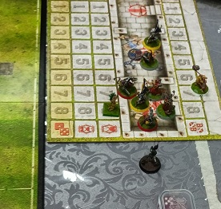
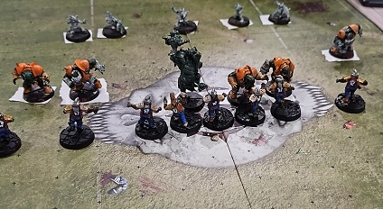
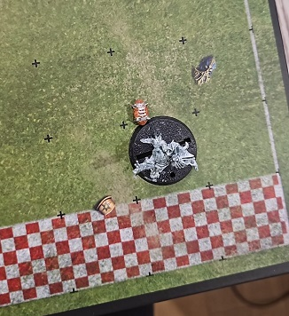
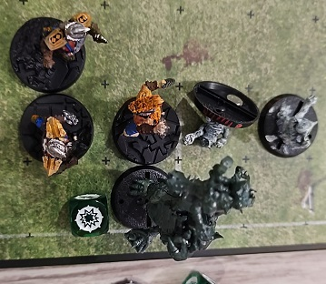
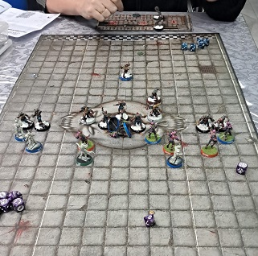
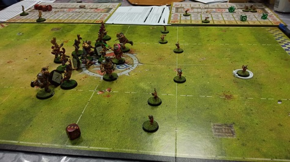
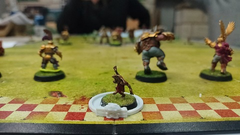
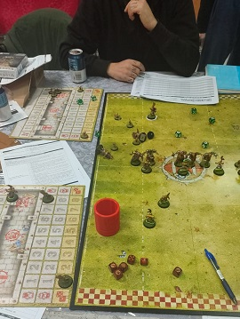

PDFs actas de partido
Enric VS Rodrigo M Rodrigo H VS Santi Ruben VS Raul Sergio VS Frank

09/12/24
-¡Que emoción! ¡Que excitante!
-¡Como dices, Bob?
-El partido de las Ratas del Duero. ¡Que bello expectáculo!
-¡Ah! Y que lo digas, Bob. No veia montones de ratas muertas tan grandes desde la Gran Plaga Negra.
-Ja, ja, ja. Muy bueno, Jim.


-Bueno, Bob. Me alegra que estes disfrutando de ese partido porque aun queda toda la segunda parte.
-Esperemos que el ritmo de bajas no baje, Jim.
-Je, je, je. Buen juego de palabras, Bob.
-¿Que juego de palabras? Yo me refiero al juego de manos, garras, patadas... y bueno cualquier cosa que no vean los arbitros!
-Bueno, Bob, en cualquier caso ya lo veremos. Y nuestros espectadores podran verlo también con su subscripción a Cabal Visión!.

-Las mejores imagenes de la jornada siempre en Cabal Visión. ¿Verdad, Jim?
-Así es, Bob. ¿Quieres que pongamos la repetición de la jugada del día?
-Si te refieres a ese patético lanzamiento de compañero del troll de los Black United la respuesta es no, Jim.

-¿Como dices, Bob?
-¡Si, Jim! Prefiero ver como dicho troll ha acabado en la grada momentos después. ¡JA, JA, JA!
-Eh... De acuerdo, Bob. Después de todo la jugada no acabo en tanto. El goblin que pudo marcar resbalo y cayó.
-¡Cierto, Jim! ¡Veamos ambas jugadas!. ¡JA, JA, JA!
-Por supuesto, Bob.


-¡JA, JA, JA!
-Edificantes imagenes, Bob. Recordamos a nuestros espectadores que ya ha comenzado la campaña de Soriabonos como otras navidades. Nuestra recomendación, siempre, es hacer uso de los mismos en la tienda local Rayo de Luna

26/11/24
-Ya se han jugado dos partidos completos de esta jornada, Bob
-¡Y que partidos, Jim! Esta misma tarde se han estrenado los Pink slashers del entrenador Santy.
-Efectivamente, Bob. Y han demostrado su sed de sangre.
-¡Y tanto, Jim! Tres heridos que se perderan el próximo partido.
-Me referia a que se han hecho con la victoria.
-Eso también, Jim. Pero los norses echaran de menos a ese Ulfwerener.

-Aún es pronto para pensar en la próxima jornada, Bob. Hablemos del otro partido disputado.
-Eh... no sé Jim. No tengo nada que comentar.
-¿Te molesta que cuatro ogros no hayan sido capaces de machacar a esos pomposos humanos?
-¡Nada de eso, Jim! Solo digo que de haber estado yo en el campo la táctica se habria centrado más en aplastar, golpear y mutilar que en hacer florituras.
-Bueno, Bob. Cada entrenador tiene su propio estilo de juego. Veremos que acontece en los próximos encuentros.
22/11/24
-¡Comienza la segunda jornada del campeonato, Bob!

-Y ya era hora, Jim. No es lo mismo la violencia de la serie Game of Gnomes que un buen partido de Blood Bowl.
-Ah, esa serie es adictiva.
-¿Como se presenta la jornada, Jim?
-Bueno, Bob. Los entrenadores han gastado sus puntos de experiencia como han creido más conveniente y algunos jugadores empiezan a despuntar entre sus compañeros.
-¿Y de bajas como andamos, Jim?.
-En la jornada inaugural hubo varios muertos...
-¡Como debía ser, Jim!
-Eh... claro, Bob. En cualquier caso los equipos que no llegaban al minimo reglamentario despues de estas bajas han podido completar sus plantillas con jugadores itinerantes.
-Sabandijas... en mi opinion.
-Desde luego no van a ser jugadores estrella precisamente... No dudo de que los entrenadores los colocarán en las posiciones más peligrosas.
-¡Carne para la picadora!
-Calma, Bob. Emitimos en horario infantil... volviendo al bello deporte... Se ha disputado la primera parte del encuentro entre Sergio y los Ogros de Frank.

-No se que pensar de estos ogros, Jim. En mis tiempos no habría perdido tiempo intentando marcar haciendo florituras con los Gnoblars...
-¡¿Florituras, Bob?! No sabia que conocieras tan delicada palabra je, je, je... En cualquier caso esa jugada estará sin duda entre las aspirantes al premio "Jugada de fantasía" a final de temporada...
-¡Bah! A mi solo me interesa el premio al "Jugador más lesivo".
